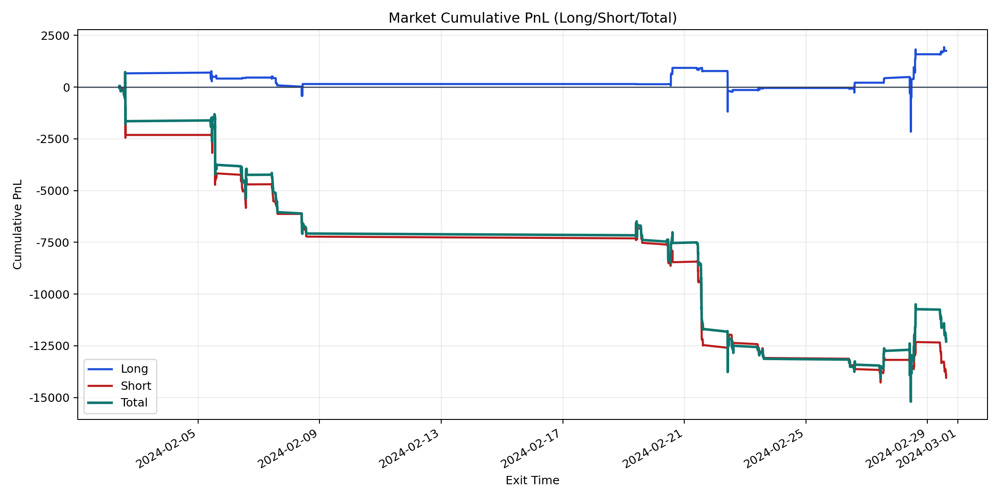
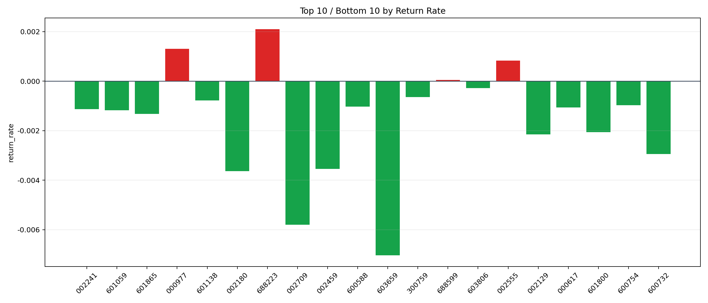

| repo_root | /home/haoranyou/data/output/alpha0.4_1w_5s_3ticks_index_filter/index_weights_300 |
|---|---|
| period_months | 1 |
| period_label | 2024-02-02_to_2024-02-29 |
| start_time | 2024-02-02 09:51:12 |
| end_time | 2024-02-29 14:45:02 |
| n_trades | 2101 |
| n_symbols | 20 |
| total_pnl | -12292.21455000002 |
| long_total_pnl | 1752.932250000004 |
| short_total_pnl | -14045.146800000028 |
| total_entry_notional | 18279121.0 |
| long_entry_notional | 4473250.0 |
| short_entry_notional | 13805871.0 |
| total_return_rate | -0.0006724729569873749 |
| long_return_rate | 0.0003918699491421235 |
| short_return_rate | -0.0010173314526841536 |
| top_symbols_by_return | ["688223", "000977", "002555", "688599", "603806", "300759", "601138", "600754", "600588", "000617"] |
| bottom_symbols_by_return | ["603659", "002709", "002180", "002459", "600732", "002129", "601800", "601865", "601059", "002241"] |

